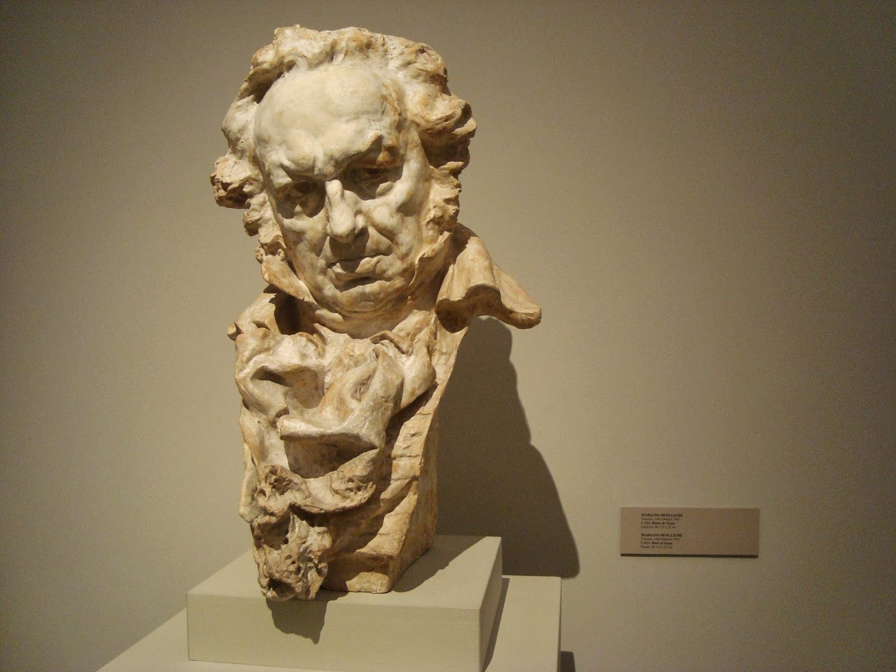
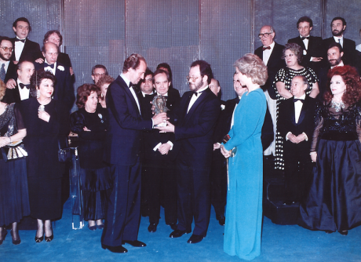
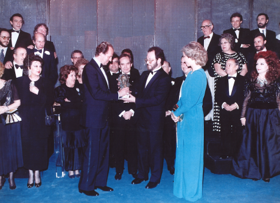
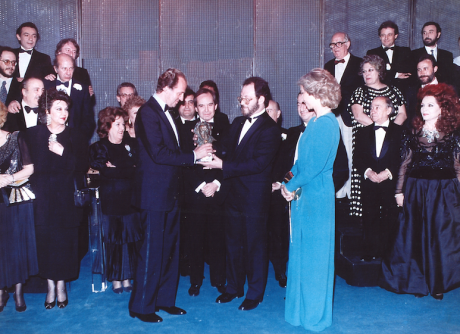

Academia de las Artes y las Ciencias Cinematográficas

 


¿Qué son los Goyas?
La Academia celebra la calidad del cine español con la entrega de los Premios Goya a los mejores profesionales de cada una de las especialidades técnicas y creativas.
Historia de los Premios Goya
El 12 de noviembre de 1985 fue una fecha clave para la historia del cine español. Un grupo de personalidades cinematográficas se reunió para debatir el futuro del cine.
¿Cómo se hace un Goya?
- Modelado en barro
- Creación de molde
- Fundición en bronce